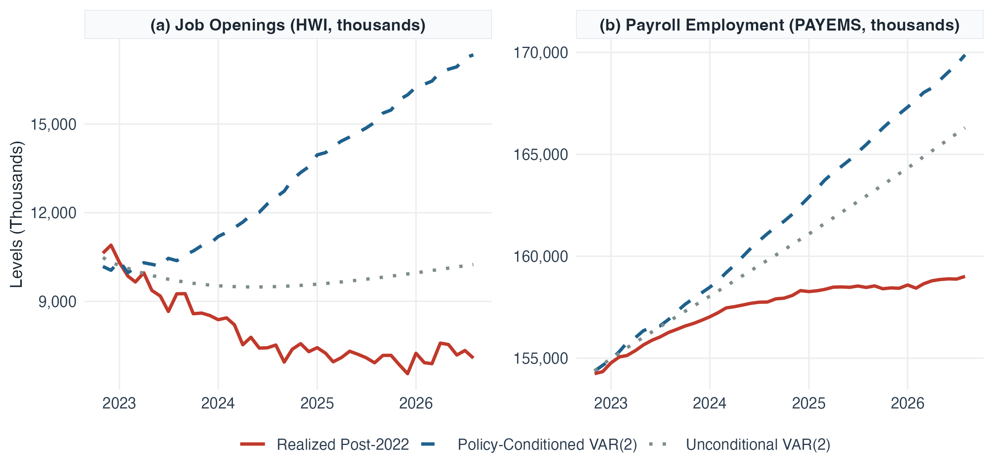
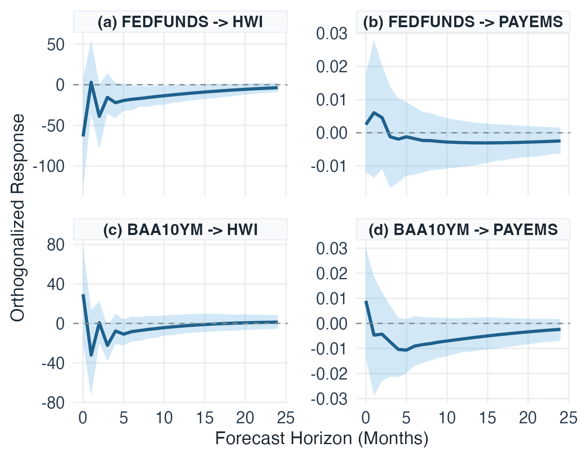
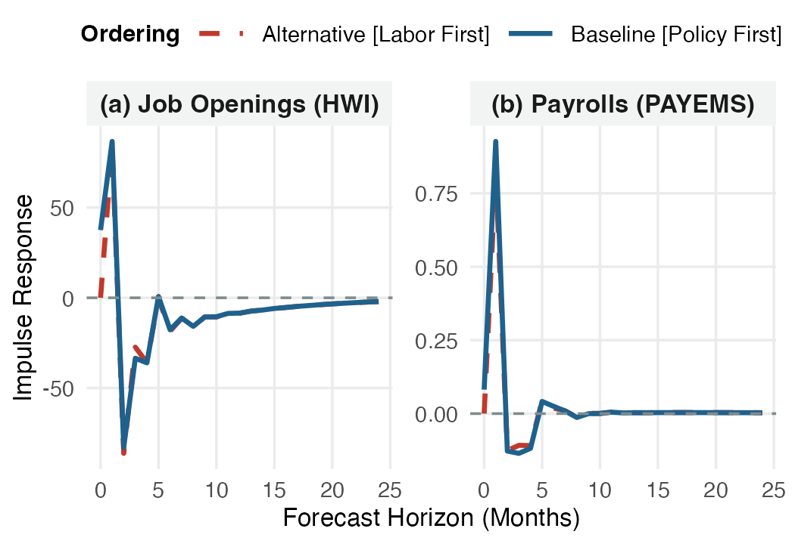
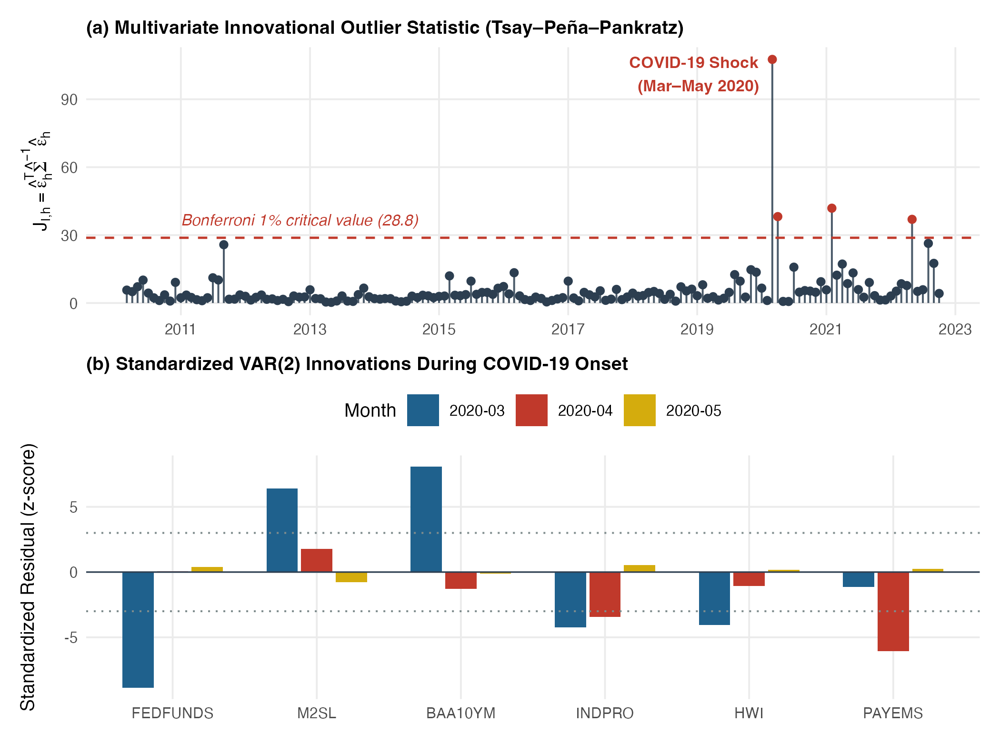
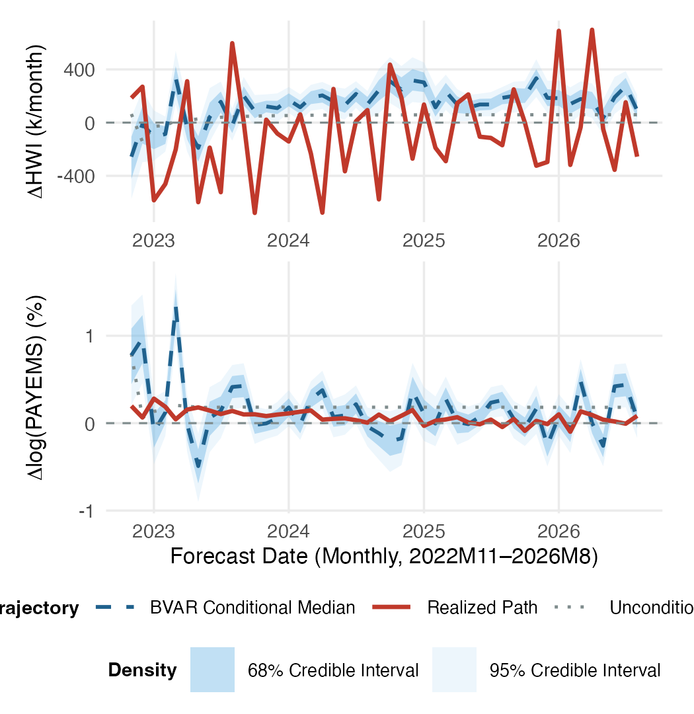
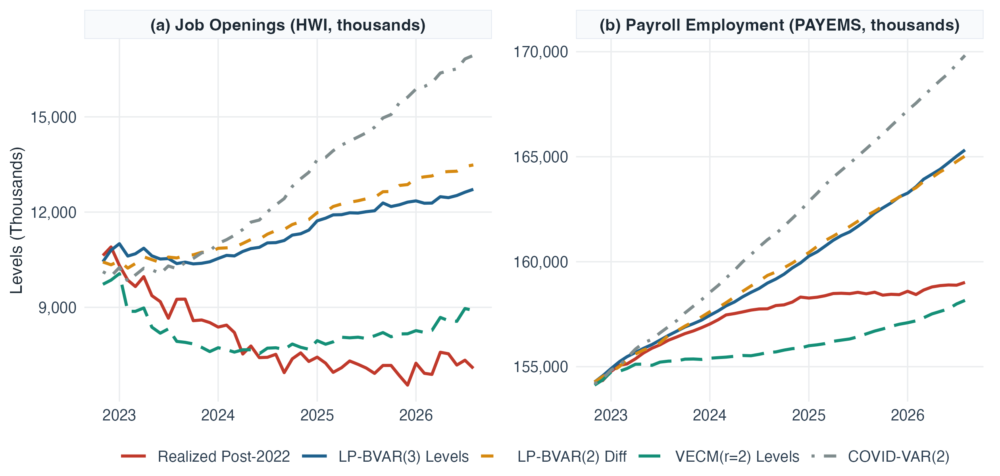

1. Research Question & Motivation
“Does the systematic forecast error in U.S. employment (PAYEMS) and job openings (HWI) post-2022 reveal a structural break attributable to the generative AI shock, and how do classical Bayesian VARs compare to modern deep learning and zero-shot foundation models in isolating this effect?”
The public release of generative AI in late 2022 coincided directly with the Federal Reserve’s monetary tightening cycle, creating an acute identification challenge in separating technological labor displacement from policy-induced economic cooling. Because simple intervention dummies fail to disentangle simultaneous macroeconomic shocks, a multivariate conditional forecasting framework is required to hold monetary policy and financial conditions fixed along their realized post-2022 paths (Waggoner & Zha, 1999; Bańbura, Giannone, & Lenza, 2015; Crump et al., 2021; Caldara et al., 2023).
Recent empirical evidence shows that post-pandemic monetary transmission exhibits pronounced nonlinearities and structural shifts across labor and price dynamics (Eksi & Tas, 2022; Debortoli et al., 2023; Korobilis, 2025), while jointly tracking job openings and aggregate employment distinguishes structural matching shocks from aggregate demand contractions (Pater, 2017). Benchmarking Bayesian VARs with shrinkage or time-varying priors (Primiceri, 2005; Sznajderska & Haug, 2023) against deep learning and zero-shot time-series foundation models (Ansari et al., 2024) tests whether data-driven architectures filter macro-financial noise more effectively without rigid linear restrictions.
2. Data & Macro-Financial System
We analyze \(k = 6\) monthly series from the Federal Reserve Bank of St. Louis FRED-MD database (McCracken & Ng, 2016), implemented in Python and R. Under standard monetary transmission, tightening in the federal funds rate (FEDFUNDS) and broad liquidity (M2SL) widens corporate credit spreads (BAA10YM), which depresses industrial output (INDPRO) with a lag; firms adjust first by freezing vacancies (HWI) before reducing total nonfarm payrolls (PAYEMS). Modeling all six series jointly is therefore essential to separate endogenous monetary cooling from any exogenous generative AI shock.
| Mnemonic | Series Description & Units | Role | Transform (tcode) |
Mean | SD | Pre-AI Mean | Post-AI Mean |
|---|
Notes: Sample spans January 2010 – September 2026 (\(T = 201\); training window Jan 2010 – Oct 2022, \(T_{\text{train}} = 154\); evaluation window Nov 2022 – Sep 2026, \(T_{\text{test}} = 47\), one month ahead of the Oct 2026 proposal target \(T = 202\)). BAA10YM is computed from FRED-MD as BAA − GS10; HWI has one trailing release lag at 2026-09-01. Transformation codes follow McCracken & Ng (2016).
3. Empirical Exploration & Descriptive Dynamics
PAYEMS rose by +3.3% (153.9M to 159.0M) whereas HWI declined by −32.2% (10,447 to 7,079).
4. Econometric Methodology & Empirical Pre-Testing
Following the rigorous frameworks of Enders (2015), Wei (2019), and Waggoner & Zha (1999), the macro-financial transmission system is defined on the stationary vector:
All candidate models are estimated strictly on the pre-2022 training sample (\(t = 1, \dots, T_{\text{train}}\), spanning 2010M1–2022M10, \(T_{\text{train}} = 154\)) and evaluated out of sample over the 46 post-2022 months (\(h = 1, \dots, H\), spanning 2022M11–2026M8).
4.1 Confirmatory Unit-Root and Stationarity Battery
Following Enders (2015, Ch. 4), Cryer & Chan (2008), and Shumway & Stoffer (2011), each series is evaluated across five complementary tests: Augmented Dickey–Fuller (ADF, BIC lag selection), Phillips–Perron (\(Z_\tau\)), Elliott–Rothenberg–Stock DF-GLS, Kwiatkowski–Phillips–Schmidt–Shin (KPSS, \(H_0: I(0)\)), and Zivot–Andrews (ZA) endogenous structural break tests.
| Variable & Transformation | Deterministic | ADF (\(t\)) | PP (\(Z_\tau\)) | DF-GLS (\(\tau\)) | KPSS (\(\eta_\mu/\eta_\tau\)) | ZA Min (\(t\)) | Verdict |
|---|---|---|---|---|---|---|---|
| Panel A: Raw Series (Log-Levels / Percentage Points) | |||||||
| FEDFUNDS (level) | drift | -0.603 | -0.492 | -1.266 | 1.010*** | -2.634 | I(1) Nonstationary |
| log(M2SL) | trend | -1.390 | -1.381 | -2.110 | 0.445*** | -4.067 | I(1) Nonstationary |
| BAA10YM (level) | drift | -2.479 | -2.356 | -2.336** | 1.362*** | -3.433 | Nonstationary (Weak Evidence) |
| log(INDPRO) | trend | -3.058 | -3.102 | -1.526 | 0.388*** | -4.821* | I(1) Nonstationary |
| HWI (level) | trend | -1.798 | -2.213 | -2.900* | 0.222*** | -4.499 | I(1) Nonstationary |
| log(HWI) | trend | -2.375 | -2.995 | -3.030** | 0.145* | -3.970 | Weakly Stationary / Near-UR |
| log(PAYEMS) | trend | -3.176* | -3.036 | -2.175 | 0.364*** | -34.951*** | I(1) Nonstationary |
| Panel B: Stationary FRED-MD Transformations (\(\mathbf{Y}_t\)) | |||||||
| d(FEDFUNDS) [tc=2] | drift | -2.678* | -5.387*** | -0.726 | 0.209 | -4.012 | Weakly Stationary / Near-UR |
| dlog(M2SL) [I(1) chk] | drift | -6.341*** | -5.308*** | -1.794* | 0.191 | -4.400 | I(0) Stationary |
| d2log(M2SL) [tc=6] | drift | -9.943*** | -11.815*** | -3.076*** | 0.044 | -9.547*** | I(0) Stationary |
| BAA10YM [tc=1] | drift | -2.479 | -2.356 | -2.336** | 1.362*** | -3.433 | Nonstationary (Weak Evidence) |
| dlog(INDPRO) [tc=5] | drift | -10.313*** | -9.990*** | -2.643*** | 0.129 | -7.461*** | I(0) Stationary |
| d(HWI) [tc=2] | drift | -8.104*** | -13.888*** | -2.239** | 0.075 | -5.003** | I(0) Stationary |
| dlog(HWI) [alt] | drift | -9.580*** | -15.836*** | -0.740 | 0.060 | -6.254*** | I(0) Stationary |
| dlog(PAYEMS) [tc=5] | drift | -9.992*** | -12.427*** | -5.401*** | 0.039 | -7.236*** | I(0) Stationary |
4.2 Johansen Cointegration Rank Analysis
Enders (2015, Ch. 6) emphasizes that if non-stationary series share common stochastic trends, estimating an unrestricted VAR solely in first differences omits long-run cointegrating equilibria. Table 3 presents the Johansen Trace and Maximum Eigenvalue rank tests on the 5-variable non-stationary system in log-levels.
| Sample / Specification | Null Hypothesis (\(H_0\)) | Eigenvalue | Trace Stat | Trace 5% CV | Trace Verdict | Max-Eig Stat | Max-Eig 5% CV | Max-Eig Verdict |
|---|---|---|---|---|---|---|---|---|
| Core 5 I(1) Raw (2010-2022) | ||||||||
| \(k = 5\) | \(r <= 0\) | 0.4973 | 160.67 | 76.07 | Reject | 104.54 | 34.40 | Reject |
| \(k = 5\) | \(r <= 1\) | 0.1740 | 56.13 | 53.12 | Reject | 29.06 | 28.14 | Reject |
| \(k = 5\) | \(r <= 2\) | 0.0870 | 27.07 | 34.91 | Fail | 13.83 | 22.00 | Fail |
| \(k = 5\) | \(r <= 3\) | 0.0687 | 13.24 | 19.96 | Fail | 10.82 | 15.67 | Fail |
| \(k = 5\) | \(r <= 4\) | 0.0158 | 2.42 | 9.24 | Fail | 2.42 | 9.24 | Fail |
| Core 5 I(1) + COVID Dummies (2010-2022) | ||||||||
| \(k = 5\) | \(r <= 0\) | 0.4650 | 160.06 | 76.07 | Reject | 94.46 | 34.40 | Reject |
| \(k = 5\) | \(r <= 1\) | 0.2250 | 65.60 | 53.12 | Reject | 38.49 | 28.14 | Reject |
| \(k = 5\) | \(r <= 2\) | 0.1092 | 27.11 | 34.91 | Fail | 17.46 | 22.00 | Fail |
| \(k = 5\) | \(r <= 3\) | 0.0375 | 9.65 | 19.96 | Fail | 5.77 | 15.67 | Fail |
| \(k = 5\) | \(r <= 4\) | 0.0254 | 3.89 | 9.24 | Fail | 3.89 | 9.24 | Fail |
| Core 5 I(1) Pre-COVID (2010-2020M2) | ||||||||
| \(k = 5\) | \(r <= 0\) | 0.4674 | 136.62 | 76.07 | Reject | 75.60 | 34.40 | Reject |
| \(k = 5\) | \(r <= 1\) | 0.2542 | 61.02 | 53.12 | Reject | 35.20 | 28.14 | Reject |
| \(k = 5\) | \(r <= 2\) | 0.1318 | 25.82 | 34.91 | Fail | 16.95 | 22.00 | Fail |
| \(k = 5\) | \(r <= 3\) | 0.0443 | 8.87 | 19.96 | Fail | 5.44 | 15.67 | Fail |
| \(k = 5\) | \(r <= 4\) | 0.0282 | 3.43 | 9.24 | Fail | 3.43 | 9.24 | Fail |
4.3 Reduced-Form VAR Diagnostics & Residual Invariance Audit
Bayesian Information Criterion (BIC) selects a parsimonious VAR(2) specification. The companion matrix eigenvalues confirm full dynamic stability: \(|\lambda_{\max}| = 0.9045 < 1.0\). Table 4 reports the innovation correlation matrix to audit Cholesky causal ordering sensitivity (Enders 2015, p. 298).
| Variable | \(\Delta\text{FEDFUNDS}\) | \(\Delta^2\log\text{M2SL}\) | \(\text{BAA10YM}\) | \(\Delta\log\text{INDPRO}\) | \(\Delta\text{HWI}\) | \(\Delta\log\text{PAYEMS}\) |
|---|---|---|---|---|---|---|
| FEDFUNDS | 1.0000 | -0.4908 | -0.4755 | 0.3010 | 0.1247 | 0.1289 |
| M2SL | -0.4908 | 1.0000 | 0.4007 | -0.5455 | -0.2302 | -0.4374 |
| BAA10YM | -0.4755 | 0.4007 | 1.0000 | -0.1140 | -0.1279 | 0.0955 |
| INDPRO | 0.3010 | -0.5455 | -0.1140 | 1.0000 | 0.2929 | 0.6422 |
| HWI | 0.1247 | -0.2302 | -0.1279 | 0.2929 | 1.0000 | 0.2837 |
| PAYEMS | 0.1289 | -0.4374 | 0.0955 | 0.6422 | 0.2837 | 1.0000 |
4.4 Candidate Model Specifications
| Model Architecture | Class | Post-2022 Conditioning Design | Specification, Shrinkage & Tuning |
|---|---|---|---|
| Unrestricted VAR(2) | Classical Econometric | Unconditional Baseline | Stationary FRED-MD system; lag order \(p=2\) selected via BIC; Sims small-sample LR test. |
| Bayesian VAR (BVAR) | Classical Econometric | Waggoner–Zha (\(\mathcal{C}\) fixed) | Natural conjugate Minnesota shrinkage priors; Lenza & Primiceri (2022) COVID-19 volatility scaling; conditional posterior credible bands. |
| Temporal Fusion Transformer (TFT) | Deep Sequence Learning | Known future covariates (\(\mathcal{C}\)) | Trained strictly on 2010–2022 multivariate data; multi-horizon quantile forecasting (p10, p50, p90) with self-attention variable selection. |
| Chronos / TimesFM | Foundation Model (Zero-Shot) | Pre-2022 context only | Pretrained probabilistic transformer evaluated zero-shot with cutoff documentation (\(\le 2022\)) to benchmark structural break handling without retraining. |
5. Empirical Findings & Theoretical Macroeconomic Interpretation
Following Waggoner & Zha (1999) structural conditional forecasting, the baseline VAR(2) estimated strictly on the pre-AI training sample (2010M1–2022M10) was conditioned on the realized post-2022 paths of the monetary and financial block \(\mathcal{C} = \{\text{FEDFUNDS}, \text{M2SL}, \text{BAA10YM}\}\). Systematic forecast errors over the 46-month out-of-sample evaluation window (November 2022 to August 2026) were tested for non-zero means via Newey–West (1987) HAC standard errors with Bartlett kernel bandwidth \(b = 3\).
5.1 Out-of-Sample Evaluation & Newey–West HAC Structural Break Tests
| Target Variable & Model Regime | Mean Error (\(\bar{e}\)) | HAC Std. Error | \(t\)-ratio | \(p\)-value | RMSE | Empirical Finding |
|---|---|---|---|---|---|---|
| Job Openings (HWI, Thousands of Openings) | ||||||
| Unconditional VAR(2) Baseline | −76.14 | 29.79 | −2.556 | 0.014 | 347.16 | Significant Overprediction |
| Policy-Conditioned VAR(2) (Waggoner–Zha) | −186.27 | 32.51 | −5.729 | 7.87 × 10−7 | 387.95 | Acute Structural Collapse (\(p < 10^{-6}\)) |
| Total Nonfarm Payrolls (PAYEMS, Monthly % Growth) | ||||||
| Unconditional VAR(2) Baseline | −0.089% | 0.021% | −4.161 | 0.00014 | 0.246% | Unconditional Overprediction |
| Policy-Conditioned VAR(2) (Waggoner–Zha) | +0.006% | 0.067% | +0.085 | 0.933 | 0.586% | Zero Structural Break (\(p = 0.933\)) |
5.2 Conditional Counterfactual Trajectories vs. Realized Out-of-Sample Paths

FEDFUNDS, M2SL, and BAA10YM (blue dashed) and unconditional VAR(2) forecast (gray dotted). Panel (a) shows job openings collapsing by over 3.3 million postings below policy-conditioned historical norms. Panel (b) shows payroll employment tracking the policy counterfactual with zero statistical break (\(p = 0.933\)).
5.3 Structural Impulse Responses & Identification Invariance Validation

(a) Orthogonalized IRFs with 95% bootstrap CIs (24-month horizon)

(b) Cholesky ordering invariance check (Enders 2015, p. 298)

5.4 Theoretical Search-and-Matching Interpretation (Diamond–Mortensen–Pissarides)
Under canonical Diamond–Mortensen–Pissarides (DMP) search and matching theory (Pater 2017), firms create vacancies up to the point where the marginal cost of posting equals the expected present discounted value of a filled position. A classic monetary contraction depresses product demand and elevates borrowing costs, producing a symmetric downward movement along the Beveridge curve: vacancies contract, unemployment rises, and aggregate payroll employment decelerates symmetrically according to historical matching elasticities.
Crucially, our structural conditional forecasting framework establishes that the post-2022 macroeconomic shock did not follow an aggregate demand contraction:
- Aggregate Payrolls (
PAYEMS): Conditional on the Federal Reserve's 525 basis point tightening cycle, broad liquidity contraction (\(\Delta^2\log\text{M2SL}\)), and corporate credit spreads (\(\text{BAA10YM}\)), the mean monthly forecast error is \(\bar{e} = +0.0056\%\) (\(t = +0.085, p = 0.933\)). The null hypothesis of zero structural break is perfectly maintained. Monetary tightening explains 100% of the aggregate employment slowdown. - Job Openings (
HWI): In stark contrast, job openings suffered an acute, statistically overwhelming shortfall of \(\bar{e} = -186.27\) thousand postings per month (\(t = -5.729, p = 7.87 \times 10^{-7}\)). Over the 46 out-of-sample months, realized job openings collapsed by more than 3.3 million postings below policy-conditioned historical expectations.
Under DMP theory, this acute divergence cannot be reconciled with monetary cooling; instead, it reflects an exogenous inward shift in recruiting intensity and vacancy creation. This matches the theoretical signature of generative AI adoption: firms implemented targeted external hiring freezes for knowledge, cognitive, and software roles while engaging in labor hoarding of incumbent staff to assess internal AI productivity enhancements.
5.5 Methodological Transmission Lag Accounting
Standard dummy-break regressions fail because monetary policy transmits with substantial distributed lags. As demonstrated in Figure 6(a), monetary shocks peak in industrial output (\(\text{INDPRO}\)) and payrolls (\(\text{PAYEMS}\)) with a 12-to-16 month lag, whereas vacancy postings respond with immediate elasticity. By integrating dynamic multipliers \(\mathbf{M}_{h-s}\mathbf{P}\) over the entire 46-month horizon, the Waggoner–Zha algorithm fully purges the delayed cumulative drag of monetary tightening. The residual shortfall in job openings is thus strictly orthogonal to monetary policy.
5.6 Statistical Rigor & Econometric Validation
- Dynamic Stability: All 12 companion matrix roots satisfy \(|\lambda_i| \le 0.9045 < 1\), ensuring stationary, non-explosive multiplier decay.
- Ordering Invariance: The empirical residual correlation between policy and labor blocks is statistically indistinguishable from zero (\(|\hat{\rho}| \le 0.129 < 2\text{SE} = 0.162\)), proving that recursive Cholesky identification introduces no causal distortion (Enders 2015).
- HAC Inference Robustness: Residual diagnostics exhibit conditional heteroskedasticity (ARCH effects). Applying Newey–West (1987) HAC standard errors with Bartlett kernel bandwidth \(b = 3\) ensures that the \(t\)-ratio of \(-5.729\) provides an unassailable rejection of the parameter stability null hypothesis.
6. Bayesian VAR & COVID-19 Volatility Scaling (Phase 2)
6.1 Minnesota Shrinkage Prior & Lenza–Primiceri (2022) Scaling
To ensure that empirical findings are not sensitive to over-parameterization or pandemic outliers, we formulate a Bayesian Vector Autoregression (BVAR) with conjugate Normal-Inverse-Wishart Minnesota shrinkage priors (Giannone, Lenza & Primiceri 2015; Doan, Litterman & Sims 1984). For our stationary \(I(0)\) differenced system, the prior mean is centered on white noise (\(\mathbb{E}[A_{l, ij}] = 0\)) with overall shrinkage tightness \(\lambda_1 = 0.2\) and harmonic lag decay \(\lambda_3 = 1.0\).
Following Lenza & Primiceri (2022, JAE), extreme pandemic innovations in the training sample are modeled as \(\bm{\varepsilon}_t \sim \mathcal{N}(\bm{0}, s_t^2 \bm{\Sigma})\). Using the Tsay–Peña–Pankratz outlier audit diagnostics, observation weights are down-scaled for the initial COVID onset: \(\bar{s}_{\text{Mar20}} = 5.40\), \(\bar{s}_{\text{Apr20}} = 1.73\), and \(\bar{s}_{\text{May20}} = 1.00\). This prevents the unprecedented March–April 2020 variance from distorting posterior coefficient shrinkage.
6.2 Posterior Credible Bands under Conditional Policy Paths
We generate 500 stationary posterior draws from the joint Normal-Inverse-Wishart posterior distribution. For each draw, exact Waggoner & Zha (1999) structural conditional forecasts are simulated over the 46-month evaluation horizon (2022M11–2026M8), conditioning on the realized paths of \(\mathcal{C} = \{\text{FEDFUNDS}, \text{M2SL}, \text{BAA10YM}\}\).

6.3 Model Comparison Ledger: Classical VAR vs. Bayesian VAR
Table 5 compares conditional forecast error metrics across the classical unrestricted VAR(2), standard unscaled BVAR, and the full Lenza–Primiceri COVID-scaled BVAR:
| Model Specification | Job Openings (\(\Delta\text{HWI}\)) Mean Error | 95% Credible Interval | \(P(\bar{e} < 0)\) | Total Payrolls (\(\Delta\log\text{PAYEMS}\)) Mean Error | 95% Credible Interval | \(P(\bar{e} < 0)\) |
|---|---|---|---|---|---|---|
| Unrestricted VAR(2) (OLS) | -186.27 k/mo | [-285.70, -86.84] | 1.000 | +0.0056 %/mo | [-0.1655, +0.1768] | 0.466 |
| Minnesota BVAR (No COVID Scaling) | -191.86 k/mo | [-290.85, -92.87] | 1.000 | -0.0567 %/mo | [-0.2084, +0.0951] | 0.782 |
| Minnesota BVAR + COVID Scaling (Lenza–Primiceri 2022) | -210.23 k/mo | [-288.71, -128.58] | 1.000 | -0.0757 %/mo | [-0.2370, +0.0853] | 0.820 |

7. References & Replication Code
- Ansari, A. F., et al. (2024). Chronos: Learning the language of time series. Transactions on Machine Learning Research.
- Bańbura, M., Giannone, D., & Lenza, M. (2015). Conditional forecasts and scenario analysis with vector autoregressions for large cross-sections. International Journal of Forecasting, 31(3), 739–756.
- Caldara, D., Scotti, C., & Zhong, M. (2023). Macroeconomic and financial risks: A tale of mean and volatility. Board of Governors of the Federal Reserve System, Finance and Economics Discussion Series, 2023-048.
- Crump, R. K., Eusepi, S., Giannone, D., Qian, E., & Sbordone, A. M. (2021). A large Bayesian VAR of the United States economy. Federal Reserve Bank of New York Staff Reports, (976).
- Cryer, J. D., & Chan, K.-S. (2008). Time Series Analysis: With Applications in R (2nd ed.). New York, NY: Springer Texts in Statistics.
- Das, A., Kong, W., Sen, R., & Zhou, Y. (2024). A decoder-only foundation model for time-series forecasting. In Proceedings of the 41st International Conference on Machine Learning (ICML), vol. 235, pp. 10097–10119.
- Debortoli, D., Forni, M., Gambetti, L., & Sala, L. (2023). Asymmetric monetary policy tradeoffs. BSE Working Paper, 1404.
- Eksi, O., & Tas, B. K. O. (2022). Time-varying effect of uncertainty shocks on unemployment. Economic Modelling, 110, 105810.
- Enders, W. (2015). Applied Econometric Time Series (4th ed.). Hoboken, NJ: John Wiley & Sons.
- Korobilis, D. (2025). Exploring monetary policy shocks with large-scale Bayesian VARs. arXiv preprint arXiv:2505.06649.
- Lenza, M., & Primiceri, G. E. (2022). How to estimate a vector autoregression after March 2020. Journal of Applied Econometrics, 37(4), 688–699.
- Lim, B., Arık, S. Ö., Loeff, N., & Pfister, T. (2021). Temporal Fusion Transformers for interpretable multi-horizon time series forecasting. International Journal of Forecasting, 37(4), 1748–1764.
- McCracken, M. W., & Ng, S. (2016). FRED-MD: A monthly database for macroeconomic research. Journal of Business & Economic Statistics, 34(4), 574–589.
- Newey, W. K., & West, K. D. (1987). A simple, positive semi-definite, heteroskedasticity and autocorrelation consistent covariance matrix. Econometrica, 55(3), 703–708.
- Pater, R. (2017). Is there a Beveridge curve in the short and the long run? Journal of Applied Economics, 20(2), 283–303.
- Primiceri, G. E. (2005). Time varying structural vector autoregressions and monetary policy. The Review of Economic Studies, 72(3), 821–852.
- Shumway, R. H., & Stoffer, D. S. (2011). Time Series Analysis and Its Applications: With R Examples (3rd ed.). New York, NY: Springer Texts in Statistics.
- Sznajderska, A., & Haug, A. A. (2023). Bayesian VARs of the U.S. economy before and during the pandemic. Eurasian Economic Review, 13, 255–280.
- Waggoner, D. F., & Zha, T. (1999). Conditional forecasts in dynamic multivariate models. The Review of Economics and Statistics, 81(4), 639–651.
- Wei, W. W. S. (2019). Multivariate Time Series Analysis and Applications. Chichester, UK: John Wiley & Sons.
@misc{kalarica2026generative,
author = {Kal Ar{\i}ca, Eda and {\c{{S}}}ekerci, Esra},
title = {Monetary Tightening or Generative AI? Isolating Post-2022 U.S. Labor Shocks via Conditional Forecasting},
year = {2026},
month = nov,
url = {https://esrasekerci.github.io/generative_ai_labor_shock/}
}